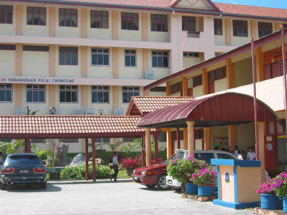
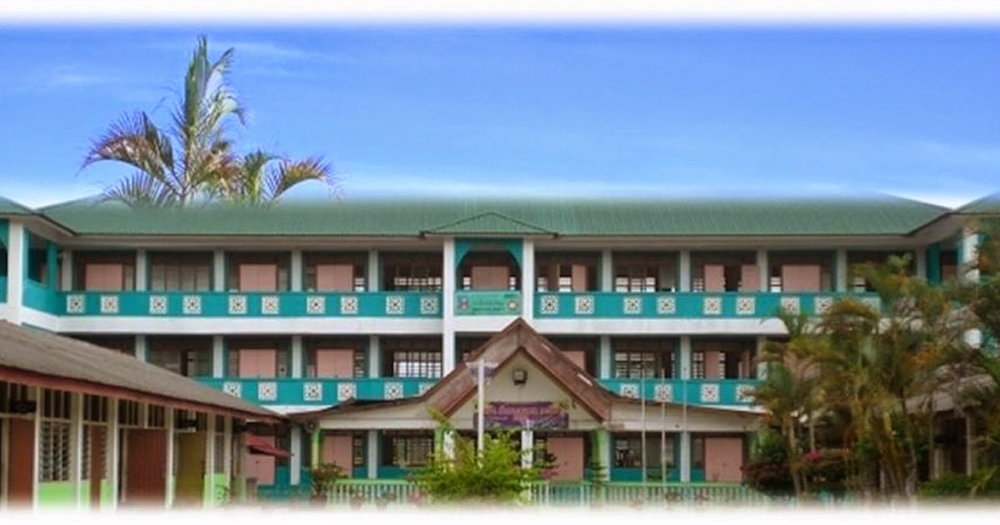

PRIMARY SCHOOL

I began my educational journey at Sekolah Kebangsaan Pulai Chondong. It was here I learned the basics of reading, writing, and arithmetic, and built my earliest friendships and school memories that still stay close to my heart.
HIGH SCHOOL

My teenage years were spent at Maktab Sultan Muhammad Petra, where I developed my academic strengths and explored extracurricular activities. This phase shaped my discipline, leadership skills, and love for learning.
UNIVERSITY
I currently study at Universiti Teknologi MARA (UiTM). Here, I am pursuing higher education and gaining professional knowledge in my chosen field. UiTM has opened up many opportunities and inspired me to achieve my goals.